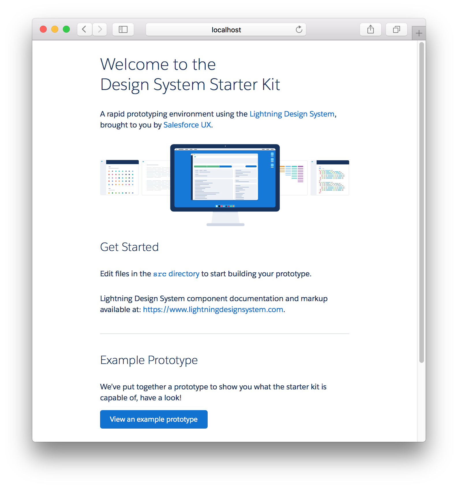

What you’ll learn
By the end of this workshop, you’ll know how to:
- Get your idea into a static prototype in Sketch
- Create a prototype of your idea using the Lightning Design System
- Iterate on that prototype directly in the browser
- Deploy the result for free to Heroku in a few clicks only
In a nutshell: getting high definition concepts in front of stakeholders and customers at minimum cost.
Why Rapid Prototyping?
Rapid prototyping is a very effective technique for testing new ideas and iterating on them. Experimenting and refining concepts lead to a better user experience for your customers and force.com users.
The closer to reality and the more interactive a prototype is, the better. But developing a whole web solution “just for research” can be costly. That’s where rapid prototyping comes into play! Both the Design System UI Kit and the Design System Starter Kit are tools that help reducing that cost while allowing you to build high quality prototypes that look and feel like the Lightning Experience.
Read more about the benefits of rapid prototyping, Lean UX and agile development on user experience
Prerequisites
- A recent browser (Chrome or Firefox recommended)
- Node.js 4.2 or up
Nice to have
- A GitHub account
- Git
- Not familiar with the command line? Use GitHub Desktop instead!
Optional
- An Heroku account (free)
- Sketch 39 or up
- Salesforce Sans fonts
What is the Design System Starter Kit?
The starter kit is a rapid prototyping environment using the Salesforce Lightning Design System, HTML, and Sass.
It’s built for designers, developers, and anyone who wants to build a prototype and dabbles in HTML.
Get Started
You’re going to download the starter kit, install dependencies, and run it locally.
- Fork the starter kit
- Go to https://git.io/starter-kit
- Click the “Fork” button
- In a terminal window,
cdinto the directory where you’d like to clone the repository (e.g.cd ~/Documents) - Clone your fork (
git clone https://github.com/[YOUR USERNAME]/design-system-starter-kit.git– or using the GUI of your choosing) - Open the fork in a terminal (
cd path/to/design-system-starter-kit)
Then, follow the instructions below (also in the Quick Start section of the starter kit’s README.md file)
4. Run npm install
Run npm install to install npm dependencies, which include the latest public version of the Lightning Design System itself. Depending on the speed of your connection, this may take up to a few minutes.
5. Run npm run dev
Run npm run dev to start a local development server:

It will open http://localhost:3000, and you should see this something like this:
⚠️ Don’t have git installed on your machine? Download the project as a zip archive. Note that you will only be able to run the starter kit locally.
Get to know the starter kit
Now you’ve installed the starter kit locally, let’s have a look at what’s inside.
The kit’s file structure looks like this:
/src/assets/: images, fonts/src/scripts/: JavaScript files*/src/styles/: stylesheets (built using Sass)/src/views/: markup and data for your pages and templates
* the Lightning Design System does not include any JavaScript, but the starter kit bundles a few basic interactions for the most common components (e.g. tabs, dropdowns).
Let’s build our first page
Included in the starter kit:
index.html: the welcome screenexample.html: an example that showcases the possibilities offered by the starter kitblank.html: a blank template ready to host your prototype!workshop.html: a blank template ready to host your prototype!workshop-done.html: what your prototype should look like when you’ve completed this workshop!
The easiest way to throw a quick prototype together is to copy and paste ready-made components from the Lightning Design System website into blank.html.
Let’s copy-paste a related list component into blank.html:
- Go to https://www.lightningdesignsystem.com/
- Search for “Related List With Table”
- Follow the first search result
- Copy the code (below the component itself)
- Paste it into
blank.html, between{% block content %}and{% endblock %}
Your browser should display this at http://localhost:3000/blank.html:

Designing in the Browser
1. Live Reload
You may have seen it when you were adding a component to the markup: any change made to your prototype will display in the browser automatically, without you having to hit the “reload” button!
Try for yourself:
- Open http://localhost:3000/blank.html
- In
blank.html, find occurrences ofContacts (will truncate) - Replace with
Any text you want! - Admire the page as it updates itself with the new text (see animation below)!

Feel free to add more components to the page and go crazy! You’ll see the results appear instantly in the browser. Oh… and one more thing: all browsers and devices connected to your local development environment will reload at the same time!
2. Directly from Chrome
- Open http://localhost:3000
- Inspect any element on the page (right click, inspect element), this will open the Chrome DevTools
- In DevTools, go to the Sources tab
- Right-Click anywhere in the left pane and select Add folder to workspace
- Find the design-system-starter-kit directory (where it was cloned)
- Hit Select
- Click Allow to give the DevTools access to your drive

Congrats, you now have access to your directory structure from within Chrome!
Let’s see what you can do:
Editing Pages in the Browser

Editing Styles in the Browser

From Sketch to the Browser
The static design you got in Sketch is in a pretty good shape and you know how to modify our prototype directly in the browser.
Now is the moment you do some copy and pasting! Errr… some coding!
In the src/views directory, there’s a file called workshop.html. That’s where you’re going to make the magic happen.
Open workshop.html in your browser, both in the developer tools and in http://localhost:3000/workshop.html.
In the HTML, you’ll see comments such as:
<!-- PAGE HEADER: https://www.lightningdesignsystem.com/components/page-headers/#flavor-record-home -->
<!-- /PAGE HEADER -->
For every set of comments, head to the mentioned URL, copy the component’s code, and paste it in the page!
After a while, your page should look pretty close to the static mockup, and you should have a solid prototype to show around!
Deploying on Heroku
You’ve pushed your work to your fork (git push origin master), and now it’s now time to share your prototype with the world!
Deploying your fork to Heroku is free and only takes 2 minutes.
- Head to your fork on GitHub
- Click the Deploy to Heroku button
- Submit the form (Deploy for Free button)
- Click the View button
That’s it! You can now share the link with the rest of the world!
Linking to GitHub
Now that you’ve got your project deployed, what do you do with any changes thereafter?
Heroku has a really cool feature that integrates with GitHub and does automatic deployments of every pushed commit:
https://devcenter.heroku.com/articles/github-integration
Go to “Manage App” › “Deploy” › “GitHub” › “Connect to GitHub” › Authorize if you need to › Search “design-system-starter-kit” and connect” › “Enable Automatic Deploys”
This means that every time you push a change, your application will be deployed.
So if you edit something and it gets committed and pushed to the master branch, a deploy hook will get triggered on Heroku and after a few minutes your application will automatically update!
Refresh and check!
Weeee!
Troubleshooting
Issues with Git
Not familiar with the command line? Use GitHub Desktop instead!
Here’s how to clone a repository using GitHub Desktop: https://help.github.com/desktop/guides/contributing/cloning-a-repository-from-github-desktop/
Permission denied (publickey)
This error happens when you’re trying to clone the repository:
Initialized empty Git repository in `/Users/username/Documents/design-system-starter-kit/.git/`
Permission denied (publickey).
fatal: The remote end hung up unexpectedly
A “Permission denied” error means that the server rejected your connection. There could be several reasons why, and the most common examples are explained below.
- Follow these instructions to set up your SSH keys
- Error: Permission denied (publickey) on GitHub’s help pages
Issues with Node.js and npm
If you’re encountering issues with Node.js modules, perform those actions in this order:
Verify that you’re running Node.js 4 or up.
node --version
# v4.x.x
Update npm:
npm install npm --global
Re-install dependencies:
cd path/to/design-system-starter-kit
npm cache clear
rm -Rf node_modules
npm install
Other issues
Dropdowns and tabs don’t work in your browser? The bundled JavaScript only works in the most recent browsers.